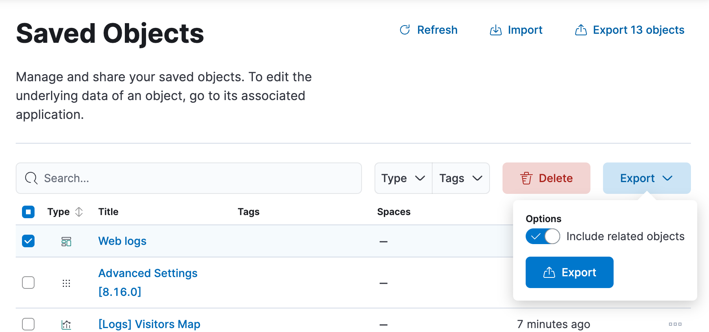

Share dashboards
editShare dashboards
editTo share the dashboard with a larger audience, click Share in the toolbar. For detailed information about the sharing options, refer to Reporting.
When sharing a dashboard with a link while a panel is in maximized view, the generated link will also open the dashboard on the same maximized panel view.
Export dashboards
editYou can export dashboards from Stack Management > Saved Objects. To configure and start the export:
- Select the dashboard that you want, then select Export.
- Enable Include related objects if you want that objects associated to the selected dashboard, such as data views and visualizations, also get exported. This option is enabled by default and recommended if you plan to import that dashboard again in a different space or cluster.
- Select Export.

To automate Kibana, you can export dashboards as NDJSON using the Export saved objects API. It is important to export dashboards with all necessary references.